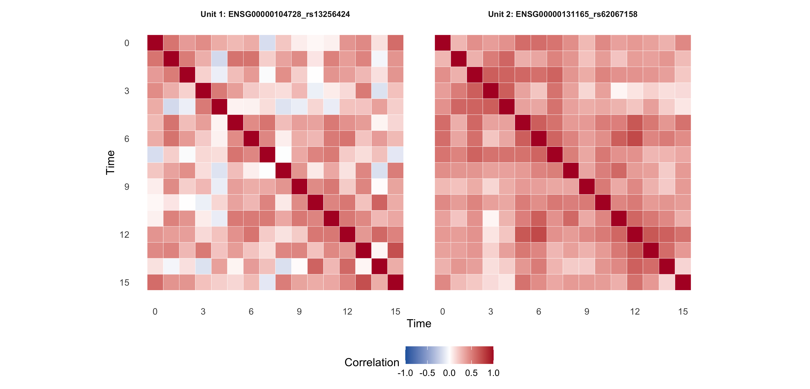
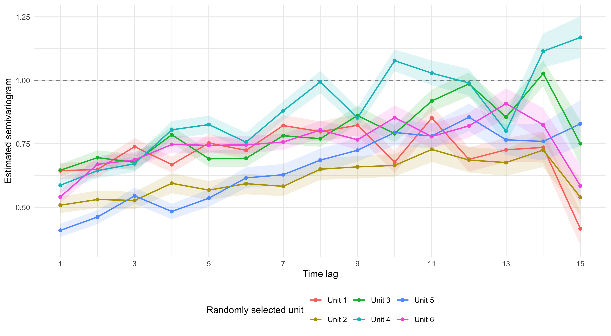
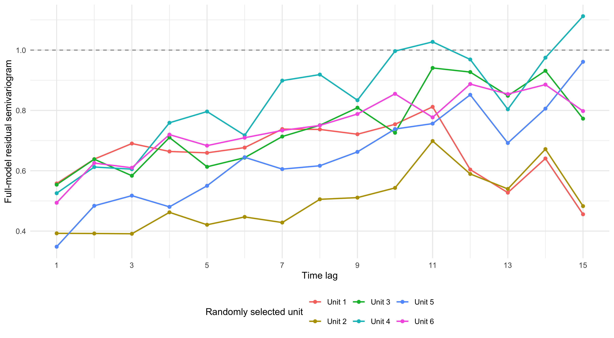

Last updated: 2026-08-25
Checks: 6 1
Knit directory: coderepo-local/
This reproducible R Markdown analysis was created with workflowr (version 1.7.2). The Checks tab describes the reproducibility checks that were applied when the results were created. The Past versions tab lists the development history.
The R Markdown file has unstaged changes. To know which version of
the R Markdown file created these results, you’ll want to first commit
it to the Git repo. If you’re still working on the analysis, you can
ignore this warning. When you’re finished, you can run
wflow_publish to commit the R Markdown file and build the
HTML.
Great job! The global environment was empty. Objects defined in the global environment can affect the analysis in your R Markdown file in unknown ways. For reproduciblity it’s best to always run the code in an empty environment.
The command set.seed(20251109) was run prior to running
the code in the R Markdown file. Setting a seed ensures that any results
that rely on randomness, e.g. subsampling or permutations, are
reproducible.
Great job! Recording the operating system, R version, and package versions is critical for reproducibility.
Nice! There were no cached chunks for this analysis, so you can be confident that you successfully produced the results during this run.
Great job! Using relative paths to the files within your workflowr project makes it easier to run your code on other machines.
Great! You are using Git for version control. Tracking code development and connecting the code version to the results is critical for reproducibility.
The results in this page were generated with repository version 55cacb9. See the Past versions tab to see a history of the changes made to the R Markdown and HTML files.
Note that you need to be careful to ensure that all relevant files for
the analysis have been committed to Git prior to generating the results
(you can use wflow_publish or
wflow_git_commit). workflowr only checks the R Markdown
file, but you know if there are other scripts or data files that it
depends on. Below is the status of the Git repository when the results
were generated:
Ignored files:
Ignored: .DS_Store
Ignored: .Rhistory
Ignored: .Rproj.user/
Ignored: Rplots.pdf
Ignored: analysis/.DS_Store
Ignored: analysis/.Rhistory
Ignored: analysis/figure/
Ignored: code/.DS_Store
Ignored: code/.Rhistory
Ignored: code/revision_simulations/.DS_Store
Ignored: data/appendixB/
Ignored: data/dynamic_eQTL_real/
Ignored: data/revision_simulations/
Ignored: data/toy_example/
Ignored: output/dynamic_eQTL_real/
Ignored: output/pdf/
Ignored: output/playwright/
Ignored: output/revision_simulations/
Ignored: scripts/
Untracked files:
Untracked: analysis/revision_internal_fash_knockoff.rmd
Untracked: analysis/revision_internal_fash_temporal_class_enhancer_enrichment.rmd
Untracked: analysis/revision_internal_three_likelihood_comparison.rmd
Untracked: code/revision_simulations/internal/fash_knockoff/reporting.R
Untracked: code/revision_simulations/internal/fash_knockoff/test_reporting.R
Untracked: code/revision_simulations/internal/fash_temporal_class_enhancer_enrichment/
Untracked: code/revision_simulations/internal/per_unit_expression_correlation/
Untracked: code/revision_simulations/internal/temporal_class_roadmap_enrichment/
Untracked: code/revision_simulations/r1_r2_fashr0143/source_snapshots/
Untracked: code/revision_simulations/r3_r4_fashr0143/21_r3_center_aligned_relative_location_paired_core.R
Untracked: code/revision_simulations/r3_r4_fashr0143/21_r3_center_aligned_relative_location_paired_fashr0143.R
Untracked: code/revision_simulations/r3_r4_fashr0143/21_r3_center_aligned_relative_location_paired_fashr0143.sbatch
Untracked: code/revision_simulations/r3_r4_fashr0143/source_snapshots/r3_center_aligned_relative_location_paired_driver.R
Untracked: code/revision_simulations/r3_r4_fashr0143/source_snapshots/r3_center_aligned_relative_location_paired_simulation_functions.R
Untracked: code/revision_simulations/r3_r4_fashr0143/test_r3_center_aligned_relative_location_paired.R
Untracked: code/revision_simulations/r4_correlated_errors/compute_full_model_residual_correlation.R
Untracked: code/revision_simulations/r4_correlated_errors/compute_pc_residual_expression_correlation.R
Unstaged changes:
Modified: analysis/revision_combined_spiky_genotype_simulation.rmd
Modified: analysis/revision_correlated_error_simulation.rmd
Modified: analysis/revision_genotype_level_simulation.rmd
Modified: code/revision_simulations/README.md
Modified: code/revision_simulations/internal/fash_knockoff/plot_lfdr_histograms.R
Modified: code/revision_simulations/internal/fash_knockoff/plot_w_boxplot_by_discovery.R
Modified: code/revision_simulations/r1_r2_fashr0143/reporting_overlay.R
Modified: code/revision_simulations/r4_correlated_errors/reporting.R
Modified: code/revision_simulations/r4_correlated_errors/test_unit_specific_residual_permutation_helpers.R
Modified: code/revision_simulations/r4_correlated_errors/unit_specific_residual_permutation_helpers.R
Note that any generated files, e.g. HTML, png, CSS, etc., are not included in this status report because it is ok for generated content to have uncommitted changes.
These are the previous versions of the repository in which changes were
made to the R Markdown
(analysis/revision_correlated_error_simulation.rmd) and
HTML (docs/revision_correlated_error_simulation.html)
files. If you’ve configured a remote Git repository (see
?wflow_git_remote), click on the hyperlinks in the table
below to view the files as they were in that past version.
| File | Version | Author | Date | Message |
|---|---|---|---|---|
| Rmd | 09f63bc | Ziang Zhang | 2026-08-24 | Sync revision analyses and rendered pages |
| html | 09f63bc | Ziang Zhang | 2026-08-24 | Sync revision analyses and rendered pages |
| Rmd | c87957a | Ziang Zhang | 2026-08-10 | Add revision analyses: R1-R6 reviewer-facing pages and internal studies |
| html | c87957a | Ziang Zhang | 2026-08-10 | Add revision analyses: R1-R6 reviewer-facing pages and internal studies |
For a single gene–variant unit \(j\), we estimate the null correlation of its 16 t-adjusted z-scores,
\[ \operatorname{Corr}\{\widehat z_j(t),\widehat z_j(s) \mid G_j, X, \text{donor coverage};\ \beta_j=0\}. \]
This is intentionally a per-unit diagnostic. It does not pool units to produce a common real-data covariance matrix, and it is not an estimate of a population-average correlation. The six units below were selected uniformly at random from the BF-adjusted FASH fit with a fixed seed. Whether a selected unit is a genuine biological null is not the identifying assumption: the randomization removes its fitted genotype effect before generating the null draws.
At every time point, we fit the original model
expression ~ 1 + PC1 + ... + PC5 + genotype. For each
permutation, we retain the fitted intercept-and-PC component, remove the
fitted genotype component, and add a donor-permuted full-model residual.
One donor map is used for all 16 time points of a draw, so each donor’s
residual trajectory remains intact. Maps are restricted to donors with
the same observed-time pattern, preserving the original missingness
structure. The null response is then refit against the original genotype
and covariates.
For each refit, its raw regression SE is converted by the same t-to-normal adjustment used for the FASH input, and \(\widehat z_j(t)=\widehat\beta_j(t)/\widehat{\mathrm{SE}}_{\mathrm{t-adjusted},j}(t)\). Each unit has 400 independently sampled donor maps; the empirical correlation matrix is the correlation across its 400 resulting null z-score vectors. The procedure conditions on observed \(G_j\) and \(X\), but not on an unobserved true genetic effect.
knitr::kable(
r4_selected_units[, c(
"unit", "pair_key", "source_bf_lfdr", "maximum_observed_beta_difference"
)],
caption = paste(
"Table 1. Six randomly selected units. The final column verifies that",
"the raw-data refit reproduces the saved FASH beta estimates."
),
align = "llll"
)| unit | pair_key | source_bf_lfdr | maximum_observed_beta_difference |
|---|---|---|---|
| Unit 1 | ENSG00000104728_rs13256424 | 0.9582 | 1.0e-15 |
| Unit 2 | ENSG00000131165_rs62067158 | 0.9417 | 5.0e-15 |
| Unit 3 | ENSG00000144935_rs13099848 | 0.9671 | 1.6e-15 |
| Unit 4 | ENSG00000156162_rs6471462 | 0.9476 | 4.2e-15 |
| Unit 5 | ENSG00000163040_rs2313830 | 0.9523 | 1.2e-15 |
| Unit 6 | ENSG00000164754_rs76121442 | 0.9401 | 4.3e-14 |
The following two panels show the first two units in the fixed random sample. They are examples rather than representative or averaged correlation patterns.
plot_r4_unit_null_heatmaps(r4_analysis$unit_results[1:2])
Figure 1. Estimated 16 by 16 t-adjusted null z-score correlation matrices from 400 signal-stripped residual-trajectory permutations for two randomly selected units. Each unit has its own donor maps and correlation estimate.
| Version | Author | Date |
|---|---|---|
| 09f63bc | Ziang Zhang | 2026-08-24 |
For each unit, the standardized semivariogram at lag \(h\) is
\[ \widehat\gamma_j(h) = 1 - \frac{1}{16-h}\sum_{t=1}^{16-h}\widehat R_j(t,t+h). \]
Under a lag-independent correlation of zero it is one. The curves display within-unit variation in the null dependence rather than a fitted common time-series model. The shaded intervals are 95% joint-draw bootstrap percentile intervals: each bootstrap replication resamples whole 16-time z-score draws, so it retains their cross-time structure. They quantify Monte Carlo uncertainty from the 400 permutations, not between-unit uncertainty.
plot_r4_unit_null_variograms(r4_analysis$unit_results)
Figure 2. Unit-specific null variograms estimated from 400 residual-permutation draws per randomly selected unit. Shaded bands are 95% joint-draw bootstrap percentile intervals; the dashed line is the value under zero correlation.
| Version | Author | Date |
|---|---|---|
| 09f63bc | Ziang Zhang | 2026-08-24 |
knitr::kable(
r4_variogram_summary,
caption = "Table 2. Short- and long-lag summaries of the unit-specific null correlations.",
align = "llrr"
)| unit | pair_key | lag_1_correlation | mean_lag_9_to_15_correlation | |
|---|---|---|---|---|
| ENSG00000104728_rs13256424 | Unit 1 | ENSG00000104728_rs13256424 | 0.356 | 0.297 |
| ENSG00000131165_rs62067158 | Unit 2 | ENSG00000131165_rs62067158 | 0.492 | 0.332 |
| ENSG00000144935_rs13099848 | Unit 3 | ENSG00000144935_rs13099848 | 0.354 | 0.116 |
| ENSG00000156162_rs6471462 | Unit 4 | ENSG00000156162_rs6471462 | 0.413 | -0.005 |
| ENSG00000163040_rs2313830 | Unit 5 | ENSG00000163040_rs2313830 | 0.591 | 0.213 |
| ENSG00000164754_rs76121442 | Unit 6 | ENSG00000164754_rs76121442 | 0.459 | 0.209 |
For a complementary residual-based calculation, we refit the original
time-specific FASH analysis model for every gene and time,
Y ~ 1 + PC1 + ... + PC5 + G, and retain its full-model
cell-line residual \(\widehat e(t)\).
Thus both PC and fitted genotype components are removed. For each unit,
we calculate cor(e_hat, use = "pairwise.complete.obs")
across the 16 time columns and derive the same variogram. Because the
observed missingness patterns differ by time, each correlation entry
uses 13–19 shared donors. These are observed full-model residual
correlations, not null z-score correlations and not a
residual-permutation estimate.
plot_r4_full_model_residual_variograms(r4_residual_analysis$unit_results)
Figure 3. Variograms derived from correlations of the full-model cell-line residuals for the same six units. At each time, residuals are from Y ~ 1 + PC1 + … + PC5 + G; each correlation uses pairwise-complete donors. The dashed line is the value under zero correlation.
The heatmaps and variograms answer a narrow question: conditional on the observed design for a particular unit, what temporal dependence appears in effect estimates when the fitted genotype signal is removed and residual donor trajectories are randomized? They are useful for checking that a single common correlation matrix would hide meaningful unit-to-unit heterogeneity.
They do not establish a population covariance model, calibrate FASH discovery FDR, or imply that every selected observed unit is biologically null. A formal simulation or calibration analysis would require a separate target estimand and repeated datasets.
The cache was generated from the retained BF-adjusted FASH fit and the original YRI dosage, expression, and time-specific PC inputs. It records input hashes, the six selected pair keys, all 2,400 donor maps, and the 2,400 t-adjusted null z-score draws. Recreate it from the workflowr root with:
Rscript --vanilla \
code/revision_simulations/r4_correlated_errors/run_unit_specific_residual_permutation.R \
--n-units 6 \
--n-permutations 400 \
--selection-seed 20260824 \
--permutation-seed 20260825 \
--output-id r4_unit_specific_residual_permutation_z
Rscript --vanilla \
code/revision_simulations/r4_correlated_errors/compute_full_model_residual_correlation.R
sessionInfo()R version 4.5.1 (2025-06-13)
Platform: aarch64-apple-darwin20
Running under: macOS Sequoia 15.6.1
Matrix products: default
BLAS: /System/Library/Frameworks/Accelerate.framework/Versions/A/Frameworks/vecLib.framework/Versions/A/libBLAS.dylib
LAPACK: /Library/Frameworks/R.framework/Versions/4.5-arm64/Resources/lib/libRlapack.dylib; LAPACK version 3.12.1
locale:
[1] C.UTF-8/C.UTF-8/C.UTF-8/C/C.UTF-8/C.UTF-8
time zone: America/Chicago
tzcode source: internal
attached base packages:
[1] stats graphics grDevices utils datasets methods base
other attached packages:
[1] workflowr_1.7.2
loaded via a namespace (and not attached):
[1] gtable_0.3.6 jsonlite_2.0.0 dplyr_1.1.4 compiler_4.5.1
[5] promises_1.5.0 tidyselect_1.2.1 Rcpp_1.1.1-1.1 stringr_1.6.0
[9] git2r_0.36.2 dichromat_2.0-0.1 callr_3.7.6 later_1.4.4
[13] jquerylib_0.1.4 scales_1.4.0 yaml_2.3.12 fastmap_1.2.0
[17] ggplot2_4.0.3 R6_2.6.1 labeling_0.4.3 generics_0.1.4
[21] knitr_1.50 tibble_3.3.0 rprojroot_2.1.1 RColorBrewer_1.1-3
[25] bslib_0.9.0 pillar_1.11.1 rlang_1.2.0 cachem_1.1.0
[29] stringi_1.8.9 httpuv_1.6.16 xfun_0.55 S7_0.2.2
[33] getPass_0.2-4 fs_1.6.6 sass_0.4.10 otel_0.2.0
[37] cli_3.6.6 withr_3.0.3 magrittr_2.0.5 ps_1.9.1
[41] grid_4.5.1 digest_0.6.39 processx_3.8.6 rstudioapi_0.17.1
[45] lifecycle_1.0.5 vctrs_0.7.3 evaluate_1.0.5 glue_1.8.1
[49] farver_2.1.2 whisker_0.4.1 rmarkdown_2.30 httr_1.4.7
[53] tools_4.5.1 pkgconfig_2.0.3 htmltools_0.5.9